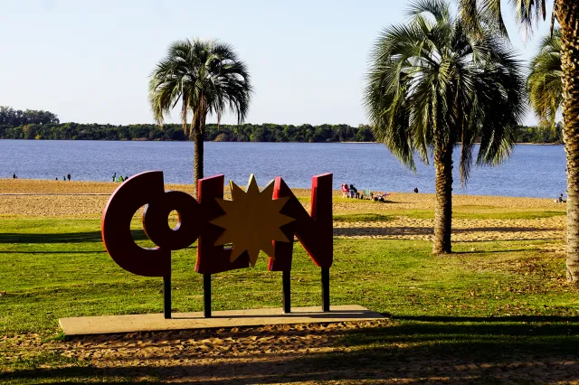
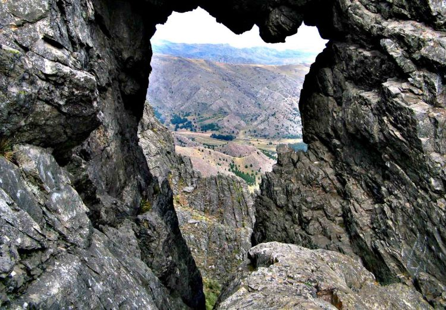
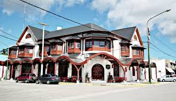
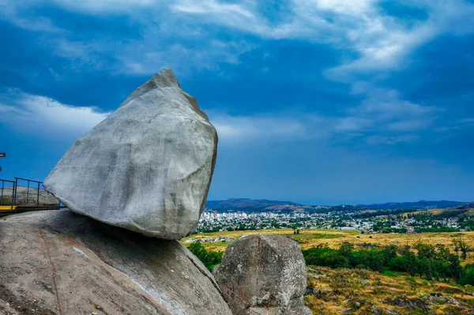
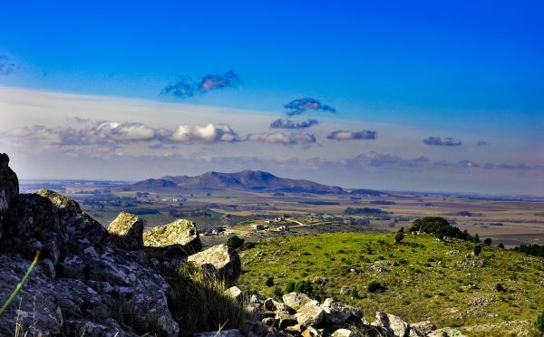
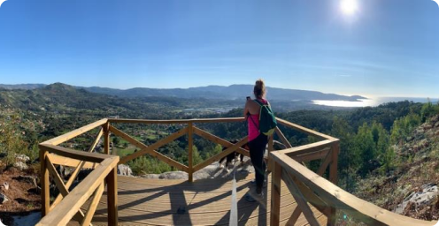
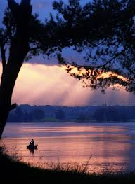
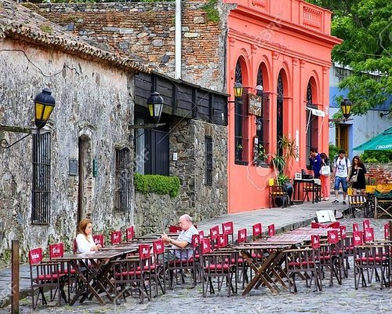
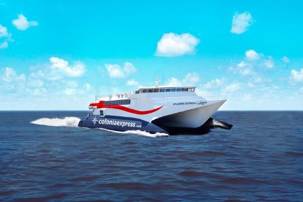
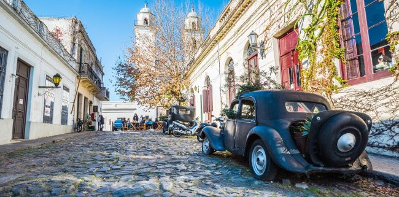

6 Destinos a menos de 500 km de Buenos Aires
Para una escapada de fin de semana!
1. Colon, Entre Rios
Descubre la Belleza de Colón
Bienvenidos a Colón, un tesoro escondido en la provincia de Entre Ríos que espera ser descubierto por los viajeros ávidos de experiencias auténticas y paisajes impresionantes.
Naturaleza en su Esplendor
Colón es bendecida con una naturaleza exuberante que te dejará sin aliento. Desde sus extensas playas sobre las costas del río Uruguay, hasta sus frondosos bosques y parques, esta ciudad ofrece un escape perfecto para quienes buscan tranquilidad y conexión con la naturaleza. No puedes perderte una visita al Parque Nacional El Palmar, hogar de los majestuosos palmares y una diversidad única de flora y fauna autóctona.¡Ven a Descubrir Colón y Vive una Experiencia Inolvidable!
Aventura y Deportes Acuáticos
¿Eres un amante de los deportes acuáticos y la aventura? Colón es el lugar ideal para ti. Embárcate en emocionantes excursiones en kayak por los ríos y arroyos que rodean la ciudad, o deslízate por las aguas en una tabla de paddle surf. Para los más intrépidos, el rafting en el río Uruguay ofrece una experiencia llena de adrenalina que nunca olvidarás.
Cultura e Historia
Sumérgete en la rica historia y cultura de Colón explorando sus pintorescas calles y visitando sus museos y monumentos. Descubre la influencia de la inmigración europea en la arquitectura local, reflejada en hermosas construcciones como la Iglesia San José y la Casa del Fundador. Además, no te pierdas la oportunidad de conocer más sobre la historia de la región en el Museo Histórico Regional.2. Sierra De La Ventana, Buenos Aires
Explora la Magia de Sierra de la Ventana, Buenos Aires
Bienvenido a Sierra de la Ventana, un rincón encantado en la provincia de Buenos Aires que cautiva a los viajeros con su impresionante belleza natural y su atmósfera serena.
Montañas Majestuosas y Naturaleza Virgen
Sierra de la Ventana es un paraíso para los amantes del aire libre y la naturaleza. Sus imponentes sierras ofrecen un paisaje espectacular, ideal para la práctica de actividades como senderismo, trekking y escalada. Descubre cascadas escondidas, cañadones profundos y miradores panorámicos que te dejarán sin aliento.
Relax y Bienestar en la Naturaleza
¿Necesitas un descanso? Sierra de la Ventana es el lugar perfecto para desconectar y recargar energías. Sumérgete en las aguas termales naturales que brotan en la región y déjate mimar con tratamientos de spa rejuvenecedores.
Turismo Histórico y Cultural
Sierra de la Ventana también tiene una rica historia y patrimonio cultural que vale la pena explorar. Visita el Museo Histórico Municipal para conocer más sobre la historia de la región y su pasado ancestral.
Gastronomía Local y Artesanía
La gastronomía de Sierra de la Ventana es una fiesta para los sentidos. Disfruta de deliciosos platos regionales elaborados con productos frescos y sabrosos, como las famosas empanadas criollas y los dulces caseros. Además, no te pierdas la oportunidad de explorar los mercados de artesanías locales.
Aventura y Deportes Extremos
¿Buscas emociones fuertes? Sierra de la Ventana tiene algo para ti. Embárcate en emocionantes excursiones de rappel y tirolesa que te llevarán a descubrir los rincones más inaccesibles de la región. También puedes practicar mountain bike en los senderos escarpados de las sierras o disfrutar de la emoción del parapente mientras sobrevuelas el paisaje montañoso.3. Tandil, Buenos Aires
Descubre la Belleza Natural y la Historia de Tandil, Buenos Aires
Bienvenido a Tandil, un destino único que combina paisajes naturales impresionantes, historia fascinante y una vibrante cultura local. Situada en el corazón de las sierras bonaerenses, esta ciudad cautiva a sus visitantes con su encanto rústico y su ambiente acogedor. Descubre cascadas ocultas, bosques de ensueño y miradores panorámicos que te dejarán sin aliento. El Parque Independencia es un lugar perfecto para relajarse y disfrutar de un día al aire libre en familia.
Historia, Cultura y Gastronomia
Sumérgete en la rica historia y la cultura de Tandil explorando su casco histórico para descubrir antiguas casonas y monumentos.La gastronomía de Tandil es una celebración de los sabores regionales y los productos locales. No puedes dejar de probar las famosas picadas tandileras, una deliciosa selección de fiambres y quesos artesanales acompañados de pan casero.
Reserva Sierra del Tigre
A pocos kilómetros de Tandil se encuentra la Reserva Natural Sierra del Tigre, un paraíso para los amantes del senderismo y el ecoturismo. Sus imponentes sierras, arroyos cristalinos y bosques de pinos ofrecen un escenario espectacular para la práctica de actividades al aire libre como senderismo, trekking, escalada y mountain bike. Esta reserva ofrece una variedad de senderos que serpentean a través del paisaje montañoso, brindando vistas panorámicas impresionantes en cada paso del camino.
¡Ven y Descubre Tandil, un Tesoro por Descubrir en Buenos Aires!
Tandil te espera con los brazos abiertos para ofrecerte una experiencia turística inolvidable llena de naturaleza, historia, gastronomía y cultura. ¡Ven y descubre todo lo que esta encantadora ciudad tiene para ofrecer!4. Sierra de los Padres, Buenos Aires
Descubre la Tranquilidad y la Naturaleza en Sierra de los Padres, Buenos Aires
Bienvenido a Sierra de los Padres, un paraíso natural ubicado a 20 km de Mar del Plata. Este encantador destino ofrece una combinación perfecta de belleza natural, actividades al aire libre y una atmósfera serena que te invita a relajarte y desconectar del estrés de la vida cotidiana.
Histórico y Cultural
También cuenta con una rica historia y patrimonio cultural que vale la pena explorar. Visita la Capilla Nuestra Señora de Lourdes, una encantadora iglesia de estilo gótico que data del siglo XIX, o descubre los restos arqueológicos de la antigua cantera de piedra que se encuentra en la zona.
Laguna de los Padres
Ubicada a aproximadamente 18 km al oeste de Mar del Plata, esta laguna es un lugar tranquilo y pintoresco para disfrutar de la naturaleza. Puedes realizar caminatas alrededor de la laguna, pescar, hacer paseos en kayak o simplemente relajarte en sus orillas.
Actividades al Aire Libre
Sierra de los Padres se encuentra enclavada en las sierras costeras de la provincia de Buenos Aires, ofreciendo un entorno natural impresionante compuesto por colinas, arroyos, bosques y lagunas. Los visitantes pueden disfrutar de caminatas escénicas por los senderos ofreciendo vistas panorámicas espectaculares de la región.Los amantes de las actividades al aire libre encontrarán en Sierra de los Padres un paraíso para explorar. Desde caminatas y paseos en bicicleta hasta la observación de aves y la pesca en las lagunas. También puedes disfrutar de picnics junto a las lagunas o realizar un emocionante paseo en kayak.
5. Colonia del Sacramento, Uruguay
Descubre la Encantadora Colonia del Sacramento y su Historia Colonial
Colonia del Sacramento, declarada Patrimonio de la Humanidad por la UNESCO es un destino imperdible para los amantes de la historia, la arquitectura y la cultura. El corazón de Colonia del Sacramento es su encantadora Ciudad Vieja, donde encontrarás una mezcla única de arquitectura colonial portuguesa y española, que te transporta a tiempos coloniales con sus calles empedradas, edificios históricos como el Faro de Colonia, la Basílica del Santísimo Sacramento y el Puente Levadizo.
Prueba la Deliciosa Gastronomía Local
La gastronomía de Colonia del Sacramento es una delicia para los paladares, con una variedad de platos tradicionales uruguayos y cocina internacional. Disfruta de un almuerzo en alguno de los acogedores restaurantes de la Ciudad Vieja, donde podrás probar platos típicos como el chivito, el asado y las empanadas. No te olvides de degustar los vinos uruguayos y los dulces postres locales.
Cómo Llegar desde Buenos Aires
Para llegar a Colonia del Sacramento desde Buenos Aires, puedes tomar un ferry desde el Puerto de Buenos Aires hasta el Puerto de Colonia.
Los ferrys operan regularmente durante todo el año y el viaje tiene una duración aproximada de una hora. Una vez en Colonia, puedes explorar la ciudad a pie o en bicicleta, ya que es un destino muy caminable y fácil de recorrer. Esta ciudad histórica es el destino perfecto para una escapada inolvidable desde Buenos Aires.

6. Mar del Plata, Buenos Aires
¡Disfruta de Mar del Plata y sus Encantadores Alrededores en la Costa Argentina!
Mar del Plata, conocida como la "Perla del Atlántico" , es uno de los destinos turísticos más populares de Argentina, con su combinación de playas doradas, una rica vida cultural y una variedad de actividades al aire libre.El Puerto del Mar del Plata
El puerto es un lugar interesante para visitar y observar la actividad pesquera. Puedes ver cómo llegan los barcos con su pesca del día, ver lobos marinos tomando sol y visitar el mercado de pescado y disfrutar de mariscos frescos en los restaurantes cercanos.
Gastronomía Costera
La gastronomía de Mar del Plata es una delicia para los amantes del buen comer, con una amplia variedad de restaurantes que ofrecen platos tradicionales y mariscos frescos. No puedes dejar de probar las famosas rabas (calamares fritos)
Cultura y Entretenimiento
Mar del Plata ofrece una rica vida cultural, con una variedad de teatros, museos, galerías de arte y eventos culturales durante todo el año. No te pierdas la oportunidad de visitar el Museo de Arte Contemporáneo MAR o el Museo del Puerto.Además, Mar del Plata es conocida por su vibrante vida nocturna, con una amplia selección de bares, pubs y discotecas para disfrutar hasta altas horas de la madrugada.
Mdp
Mdp
Mdp
Mdp
Mdp
Mdp
Mar del Plata te espera con sus playas doradas, su rica cultura y su atmósfera vibrante. Ya sea que estés buscando relajarte en la playa, disfrutar de la vida nocturna o explorar los alrededores.